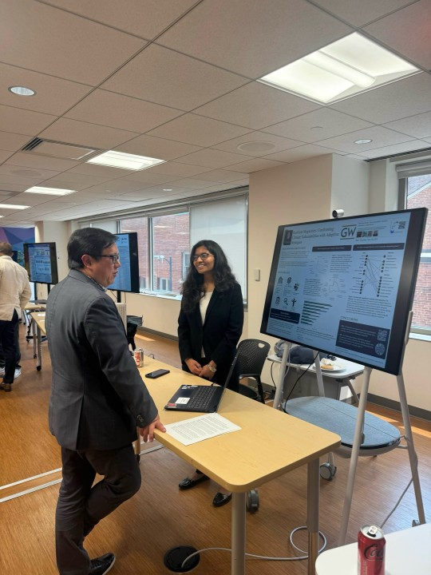

About Me
Hi! I'm Dhanyasri Bolla, a Master's student in Engineering Management at The George Washington University, with a background in Electronics and Communication Engineering from SVNIT, India. I’m passionate about combining technical thinking with strategic decision-making to address complex, real-world problems.
My work lies at the intersection of data analysis, systems thinking, and sustainable development. Recently, I’ve been diving deep into climate adaptation research—analyzing how megacities are responding to climate risks and identifying co-benefits in their adaptation strategies. Beyond research, I’ve worked on web development, marketing analytics, and systems architecture projects that showcase my versatility across disciplines.
I’m always excited to learn, collaborate, and build meaningful solutions—whether it’s through data, design, or leadership.
When I'm not working, you’ll find me exploring urban spaces, planning events with my grad student community,
Education
🎓 Master of Science in Engineering Management
The George Washington University
Washington, D.C. | December 2025 | GPA: 3.8/4.0
- Relevant Coursework: Marketing Analytics, R Programming, Systems Engineering, Project Management, Corporate Finance, Systems Thinking, and Policy Modelling
- Capstone Project: San Diego Renewable Energy Transition Modeling - Investigated emissions and operational cost impact of transitioning to 60% renewables by 2034, projecting $1.56M in annual savings and 27,000+ metric tons of CO₂ reduction per year
🎓 Bachelor of Technology in Electronics & Communications Engineering
Sardar Vallabhbhai National Institute of Technology
India | May 2023 | GPA: 8.4/10.0
- Focus Areas: Embedded Systems, Digital Communication, Programming in C and Python
- Capstone Project: 5G waveforms performance analysis over 3D channel model - Evaluated OFDM, FBMC, UFMC modulation techniques; concluded FBMC outperforms in low PAPR and BER
Experience
🔬Graduate Research Assistant | The George Washington University
May 2024 – Present | Washington D.C.
Problem: Cities face mounting climate risks but lack systematic frameworks to evaluate and compare adaptation strategies across different urban contexts.
What I Built & Delivered:
- Megacity Climate Framework: Analyzed 43 global megacities' climate plans using statistical methods (chi-square, Cramer's V, regression) and LLM pipelines—revealing critical gaps between stated risks and actual infrastructure investments
- Co-benefits Database: Coded 430+ research articles to map hidden benefits of climate adaptation (health, economic, biodiversity), identifying patterns that inform smarter policy investments
- Food Systems Analytics: Automated USDA data pipelines to calculate regional food self-reliance ratios—delivered CPI-normalized dashboards now used by the Metropolitan Washington Council of Governments' FARM Policy Committee
- Policy Impact Analysis: Developed a 14-category qualitative framework analyzing 18 expert interviews to track systemic disruptions in humanitarian food aid programs
Impact: Research presented at AGU 2024, co-authored publication in Environmental Research: Climate, and insights informing urban resilience policy for high-density cities globally.
🌐 Web Development Intern | Business Web Solutions
June 2022 – August 2022 | India
Challenge: Tourism website had poor user engagement and slow performance across devices.
Solution: Redesigned responsive UI/UX, integrated optimized APIs, and conducted comprehensive cross-browser testing.
Results: 25% increase in user engagement, 30% faster server response times, seamless experience across platforms.
📣 Marketing & Operations Intern | Unschool
August 2021 – September 2021 | India
Challenge: Online education platform needed to scale enrollments while improving operational efficiency.
Solution: Led 6-person team executing data-driven marketing campaigns and redesigned student onboarding workflows.
Results: 45% increase in enrollments, 20% better lead conversion, 30% reduction in course delivery time.
Research
Urban Giants Under Threat: Unveiling Climate Vulnerabilities & Adaptive Strategies in Megacities
Research project analyzing climate vulnerabilities and adaptation strategies in 43 global megacities.
- Conducted a comparative analysis of 48 megacities' climate action plans.
- Explored relationships between climate risks, infrastructure systems, disasters, financial mechanisms, and stakeholders.
- Applied chi-square tests and Cramer's V to identify significant associations between adaptation elements.
- Identified emergent global themes and regional disparities in urban adaptation efforts.
- Developed insights to support evidence-based climate policy for high-density urban regions.
Uncovering the Hidden Benefits of Adaptation: Insights from a Systematic Review
Research project investigating co-benefits of climate adaptation strategies across sectors and regions.
- Investigated patterns of co-benefits including health, food security, and climate mitigation.
- Co-Authored a research paper in association with NIST by coding and categorizing co-benefits from 430+ scientific articles.
- Identified recurring themes such as health improvements, biodiversity preservation, and economic cost savings across climate adaptation projects.
Research Landscape Mapping (2024)
Developed a dataset by scraping and categorizing research publications across 20+ Web of Science categories related to climate adaptation.
- Built a visualization dashboard featuring treemap and bar chart representations to highlight the dominance of Environmental Sciences, Energy Fuels, and Engineering subfields.
- Provided analytical insights into cross-disciplinary overlaps (e.g., Environmental + Engineering + Management) to support megacity adaptation policy research.
Tracking Systemic Impacts of U.S. Foreign Aid Policy: A Qualitative Analysis and Codebook Development(2024)
In response to abrupt shifts in U.S. foreign aid policy in early 2025, this project aimed to systematically document and analyze the real-world impacts on organizations engaged in food aid and food security.
- Designed and implemented a 14-category codebook with 40+ sub-codes using an iterative grounded theory approach.
- Processed and analyzed 18 expert interview transcripts, converting unstructured qualitative data into structured datasets.
- Applied Python (Pandas, Excel) and NVivo/Atlas.ti-style coding methods to tag, organize, and synthesize hundreds of data points.
- Delivered a replicable framework enabling longitudinal tracking of systemic impacts in foreign aid and food security policy.
Publications
Urban Giants Under Threat: Unveiling Climate Vulnerabilities & Adaptive Strategies in Megacities
Primary author of a research paper analyzing climate vulnerabilities and adaptation strategies in 43 global megacities.
Submitted for possible publication in the Regional Environmental Change Journal
-
Abstract: With their rapid expansion and escalating population densities, megacities face unprecedented challenges in ensuring climate resilience. Our research examines how megacities worldwide plan to adapt to climate change. Specifically, we evaluate the resilience and adaptive capacity enumerated in 43 global megacity climate reports by categorizing and coding data across five key dimensions: infrastructure systems, climate risks, natural disasters, financial sources, and stakeholder involvement. We analyze trends and relationships between variables across these megacity reports to deduce global trends in these urban areas using statistical analysis. Three key patterns emerge from our analysis of these megacity adaptation plans: (1) there is global convergence on the need for sustainable transportation infrastructure, (2) there is some misalignment between local climate risks and chosen adaptation investments, and (3) we found considerable underrepresentation of local stakeholders in planning processes. By identifying key areas of vulnerability, infrastructure plans, financial backing, and stakeholders, our research underscores gaps in current planning approaches that could be addressed in the future to make megacities safer and more sustainable.
Patterns and gaps in co-benefit reporting in global adaptation research
Co-Author: Gore, C., et al. (2026). Environmental Research: Climate.
Co-Authored a research paper in association with NIST by coding and categorizing co-benefits from 430+ scientific articles.
-
Abstract: Adaptations to extreme weather events are increasing in prevalence across the globe. Adaptation responses can produce cobenefits, which are ancillary positive outcomes beyond the primary objectives of reducing risk and enhancing resilience.
Despite growing attention to co-benefits in the adaptation literature, systematic analyses across adaptation types, sectors,
actors, and regions remain limited. This study uses the Global Adaptation Mapping Initiative (GAMI) database to investigate
the associations between adaptation characteristics and the presence of co-benefits. We processed and coded 1,684 articles, to
categorize co-benefits and analyzed them alongside other adaptation characteristics through descriptive statistics, chi-squared
tests, and logistic regressions. We found generally weak associations between adaptation characteristics and the presence of
co-benefits. Further, the regression results showed that there were no significant differences between the associations with cobenefits of adaptations that occur across economic sectors. Ecosystem based responses were found to be more likely to be
associated with the presence of co-benefits than human behavioral based responses. Technical or infrastructural responses
were found to be less likely to be associated with co-benefits than human behavioral responses. Additionally, while some of
the chi-squared associations and regression associations trended together, they also differed leading to ambiguity in the types
of adaptations that often have co-benefits present. These findings highlight the need for improved co-benefit assessment
frameworks and enhanced co-benefit documentation. Enhanced documentation could better inform adaptation planning and
maximize the ancillary benefits of adaptation actions.
Conference & Symposium Talks
AGU 2024 Poster Presentation

Presented a poster titled “Urban Giants Under Threat” at the AGU Fall Meeting 2024 in Washington, D.C., focusing on climate vulnerabilities and adaptation strategies in megacities.
SEAS R&D Showcase - GW Engineering

Presented a poster titled “Resilient Megacities” at School of Engineering and Applied Sciences Research and Development Showcase at George Washington University in Washington, D.C., focusing on climate vulnerabilities and adaptation strategies in megacities.
GWU Innovation Fest Poster Presentation

Presented a poster titled “Resilient Megacities” at the Inaugural GW Innovation Fest at George Washington University in Washington, D.C., focusing on climate vulnerabilities and adaptation strategies in megacities.
Multilateral Financial Institutions: Chief Audit Executive Group Conference 2025
Presented a poster titled “Resilient Megacities” at the Multilateral Financial Institutions: Chief Audit Executive Group Conference 2025 at Inter-American Development Bank, focusing on climate vulnerabilities and adaptation strategies in megacities.
Skills & Tools
📊 What I Can Do: Data & Analytics
- Turn messy data into insights using Python (Pandas, NumPy, Matplotlib, Seaborn) and R (Tidyverse, ggplot2, Shiny)
- Build statistical models and run analyses (chi-square, regression, conjoint analysis) to answer complex questions
- Create compelling visualizations and interactive dashboards that communicate findings to non-technical stakeholders
- Handle large-scale data processing with SQL and Spark
☁️ What I Can Do: Cloud & Data Engineering
- Design and build serverless data pipelines on AWS (Glue, Lambda, Step Functions) that scale automatically
- Create data warehouses and lakehouses (Redshift, Athena, S3) optimized for analytics and cost efficiency
- Automate ETL/ELT workflows handling real-time and batch data from diverse sources (APIs, databases, files)
- AWS Certified Data Engineer with production experience in cloud architecture
🔍 What I Can Do: Research & Analysis
- Synthesize insights from large bodies of academic literature and policy documents
- Design surveys and research frameworks to answer strategic questions
- Communicate complex findings through academic papers, posters (AGU 2024), and executive summaries
- Apply LLMs and NLP to extract structured insights from unstructured text at scale
�️ What I Can Do: Systems & Strategy
- Design system architectures using SysML and model complex stakeholder interactions
- Evaluate engineering decisions through financial modeling (NPV, IRR, sensitivity analysis)
- Think holistically about infrastructure, policy, finance, and risk in urban systems
💼 Finance & Decision Modeling
- NPV, IRR, Payback Period
- Sensitivity & Risk Analysis
- Cost-Benefit Modeling in Excel
- Engineering Economics
📈 Statistical & Research Methods
- Chi-Square, Cramer’s V, Regression
- Survey Design, Conjoint Analysis
- Binary Variable Coding
- LLM-based Textual Analysis
🌐 Web Development
- HTML, CSS, JavaScript, PHP (basic)
- Responsive UI Design
- API Integration
- Git, GitHub, Netlify, Formspree
💡 Conceptual Knowledge
- Climate Adaptation & Resilience
- Urban Systems & Sustainability
- Infrastructure Policy & Risk Mapping
- UI/UX, Energy Emissions Forecasting
🤝 What I Bring: Leadership & Communication
- Lead cross-functional teams and manage budgets for large-scale initiatives (250+ stakeholders)
- Translate technical findings into actionable recommendations for decision-makers
- Present research at conferences and synthesize complex topics for diverse audiences
Certifications
🏆 AWS Certified Data Engineer – Associate (DEA-C01)
Amazon Web Services
Validates expertise in designing, implementing, and optimizing data pipelines, ETL processes, and secure data storage solutions using core AWS services.
- Designed and maintained data pipelines for ingestion and transformation
- Orchestrated data pipelines and monitored environment performance
- Managed data lifecycle, ensured data quality, and implemented security best practices
- Proficient in AWS Glue, Redshift, Athena, DynamoDB, S3, Lambda, and related services
Projects
⚡ San Diego Renewable Energy Transition Model
Problem: Cities commit to renewable energy goals but lack quantitative models to predict actual emissions reductions and cost impacts over multi-year transitions.
What I Built: Developed a forecasting model using scaled CAISO operational data (2018-2025) to simulate San Diego's transition to 60% renewable electricity by 2034. Modeled coal-to-renewable shift scenarios and exponential adoption curves reflecting infrastructure realities.
Key Findings: Projected $1.56M annual operational savings and 27,000+ metric tons of CO₂ reduction per year. Demonstrated how decentralized renewables enhance urban resilience to wildfires and grid outages.
Impact: Delivered scalable, data-driven framework for municipal climate and energy transition planning.
🔋 Metadata-Driven Energy & Climate Data Lakehouse (AWS)
Problem: Energy providers and climate researchers use different data formats (XML, JSON) with inconsistent schemas, making cross-domain analysis nearly impossible. Legacy APIs have strict limitations and authentication requirements.
Solution I Built: Designed a serverless AWS lakehouse architecture that dynamically ingests, transforms, and analyzes energy and weather data without hard-coded logic. Created a custom XML parser to handle schema drift, normalized disparate data into unified Parquet format, and enabled SQL-based analytics to correlate solar radiation with grid load patterns.
Technical Approach: AWS Glue + DynamoDB for metadata-driven ingestion | Python (Boto3) for resilient API handling | Parquet optimization for storage | Athena for cross-domain SQL analysis
Outcome: Automated data pipeline handling multiple source formats, enabling real-time insights into renewable energy impact on grid stability.
🚗 Automobile System Architecture
Systems Engineering Course Project
Developed a Concept of Operations (ConOps), Operational View (OV-1), and functional decomposition for a vehicle system. Explored architecture alternatives like EV and cargo truck variants.
Technologies & Skills: Systems Engineering, SysML, Capella, ConOps Design, Architecture Modeling
� Scootistic DC - Urban Mobility Survey & Analysis
Problem: DC residents juggle multiple ride-sharing providers (Capital Bikeshare, Lime, Veo) with separate subscriptions, creating friction and reducing adoption of sustainable transportation.
Research Approach: Designed conjoint survey modeling vehicle options, ride duration caps, and pricing structures. Conducted regression analysis with 95% confidence intervals and power analysis (450-500 sample size) to identify optimal service configuration.
Recommendation: Proposed integrated subscription model with platform partnership strategy, backed by quantitative evidence of user preferences for flexible multi-modal access.
📉 Financial Decision-Making Model
Engineering Finance Course Project
Built a model to evaluate engineering investment decisions under uncertainty. Incorporated NPV, IRR, and sensitivity analysis in real-world tech scenarios.
Technologies & Skills: Financial Modeling, NPV, IRR, Sensitivity Analysis, Excel
📈 Marketing & Operations Campaign
Intern @ Unschool
Led a team of 6 to drive user engagement and course enrollments through digital campaigns. Analyzed performance metrics to improve outreach strategy.
Technologies & Skills: Digital Marketing, Team Leadership, Google Forms, Excel, Campaign Analytics
📶 5G Waveforms Performance Analysis over 3D Channel Model
Bachelors Final Project
Compares various 5G waveform modulation techniques (like OFDM, FBMC, UFMC, etc.) across 3D wireless channel models to identify the most efficient method. The study concludes that FBMC outperforms others in terms of low PAPR and BER, and proposes future research using AI/ML for adaptive waveform selection.
Technologies & Skills: MATLAB, Simulink, 3D Channel Modeling, Wireless Communication, Modulation Analysis, DSP, Performance Evaluation, Technical Writing
💻 Kerala Tourism Website
Web Development Project
Developed responsive front-end components and contributed to back-end functionalities for a tourism website.
Technologies & Skills: HTML, CSS, JavaScript, PHP, Responsive Design, UX Optimization
🌍 AI-Powered Climate Adaptation Dashboard
Problem: Climate adaptation plans are buried in hundreds of pages of PDF documents, making it nearly impossible to quickly compare strategies across cities or extract structured insights.
Solution: Built a full-stack web application using GPT-4 API to automatically parse climate adaptation PDFs, extract structured data (risks, infrastructure, financing, stakeholders), and generate LLM-based recommendations. Created interactive maps and comparison tools for multi-city analysis.
Tech Stack: Flask backend | OpenAI API for NLP | PyMuPDF for document parsing | Leaflet.js for interactive mapping | Bootstrap UI
Value: Transforms weeks of manual policy analysis into minutes of automated insight extraction.
Hackathons
Cerebral Valley AI Fintech Hackathon 2025 - New York City
Participant
SwapStack - An Electronics based Lending Platform.
- Designed and built the core backend for an AI-driven P2P lending app at a fintech hackathon.
- Created the complete MySQL database schema and developed the API endpoints using Python and FastAPI.
Technologies & Skills: Python, FastAPI, MySQL, PyMySQL, Cloudinary, Docker, Git, GitHub, VS Code.
Leadership
🌟 Vice President
Desis Organization, George Washington University
October 2024 – January 2026
Led planning, budgeting, and community initiatives for 250+ Indian graduate students. Oversaw board recruitment, managed member engagement, and executed cultural programs to strengthen campus inclusivity and connection.
Skills: Leadership, Community Engagement, Project Coordination, Team Management, Event Strategy
💰 Financial Officer
Google Developer Student Club, George Washington University
October 2024 – January 2026
Managed budgeting, fund allocation, and payment tracking for campus events involving 150+ participants. Collaborated with multiple student teams to ensure timely financial planning and vendor coordination while maintaining transparency and cost efficiency.
Skills: Budgeting, Event Planning, Financial Oversight, Collaboration, Reporting